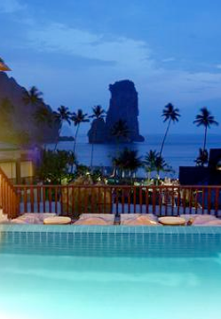

THAILAND


KRABI
![2.11 - 9.11 2007
Centara Krabi Bay Resort
334 Moo 2, Tambon Ao Nang,
Amphur Muang, Krabi
Thailand
Et nyt deluxe hotel fra september 2005. Hotellet har sin egen private bugt med 500 m hvid sandstrand og klipper i baggrunden.
Der er transportmulighed med bil eller båd til Ao Nang bugten, som kun er "en bugt" derfra. Resortet har 192 værelser alle med front mod havet og på min 77 m2 inkl. en terrasse med både spiseområde og sofagruppe. Alle værelser er indrettet med rummelige badeværelser med hårtørrer, badekåber og slippers. Desuden er der aircondition, minibar, tv, telefon, sikkerhedsboks samt kaffe- og tefaciliteter.
Resortet tilbyder ikke mindre end tre forskellige restauranter samt to barer. I Centara Spa kan du forkæle dig selv med traditionel aromatisk og terapeutisk massage, sauna, dampbad og skønhedssalon. Er du til aktiv ferie, er der et fitnesscenter, en børneklub samt mange forskellige vandsportsaktiviteter og selvfølgelig en børne- samt voksenswimmingpool.](Krabi_files/shapeimage_6.png)

BLOGPOSTS
HVOR GAMMEL SKAL MAN VÆRE FOR AT RO I KAJAK?
ONSDAG DEN 7. NOVEMBER 2007
ONSDAG DEN 7. NOVEMBER 2007
TIRSDAG DEN 6. NOVEMBER 2007
MANDAG DEN 5. NOVEMBER 2007
PÅ RUNDTUR I THE ANDAMAN SEA - SE VORES BILLEDER HER
SØNDAG DEN 4. NOVEMBER 2007
FREDAG DEN 2. NOVEMBER 2007
FOTO SERIER: